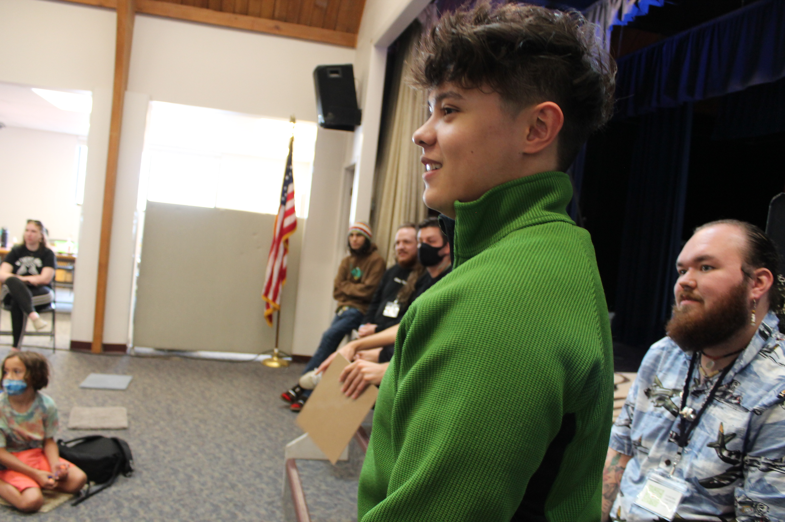

Saxophonist and pianist Alex Alunday is a fourth-year Jazz Studies student at the University of New Mexico studying under the tutelage of incredible mentors such as Eric Lau, Ashley Kelly, John Funkhouser, James Balagurchik, and Doug Lawrence. Since he began his education at UNM, he has performed various genres of music professionally across the state of New Mexico, including jazz, funk, pop, soul/RnB, and hip-hop. Through these experiences, he has developed a profound appreciation of music and love for playing.
Alex began teaching private lessons as a junior in high school. Since then, he has had a large number of students, both privately and through the ABQ based music school Rock 101, ranging from elementary-aged children to his peers, and has taught not only saxophone but also piano and clarinet. His passion for teaching has flourished into a desire to teach jazz pedagogy or performance at the university level. Alongside this goal, Alex aims to continue educating others through private lessons and aspires to perform around the world. For many musicians, it can be difficult to find even one mentor to guide and nurture their playing. Alex has been fortunate enough to have found multiple teachers who have helped him grow into the musician he is today. His main motivation is to one day inspire the next generation of musicians, just as so many incredible mentors have done for him.
Alex has been extremely fortunate enough to perform around the state with his own groups such as the Alex Alunday Trio, and Songs Without Purpose (SWP) while also being a regular member of The Mango Cakes, The Diamond Empire Band, and Gonzalo.